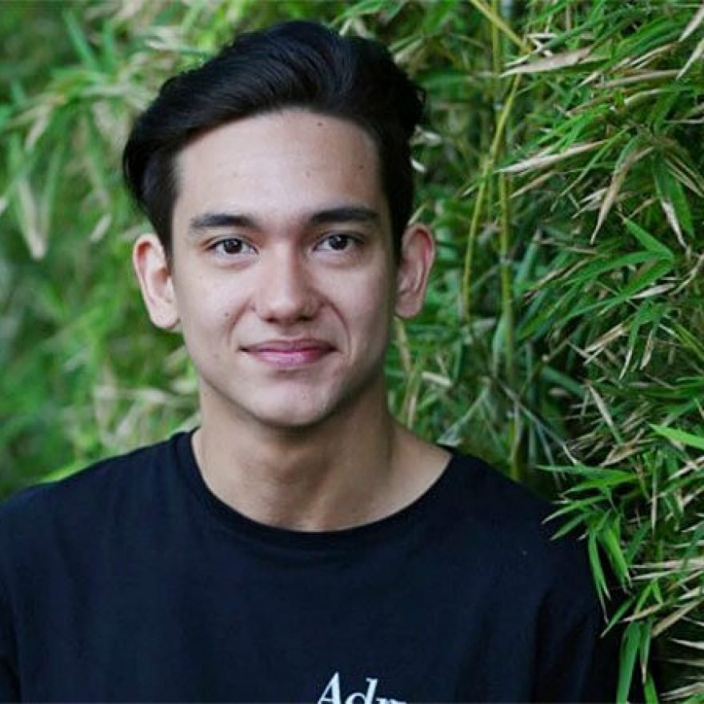
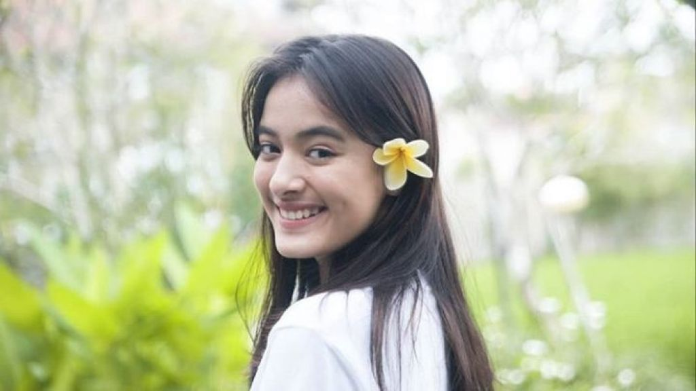
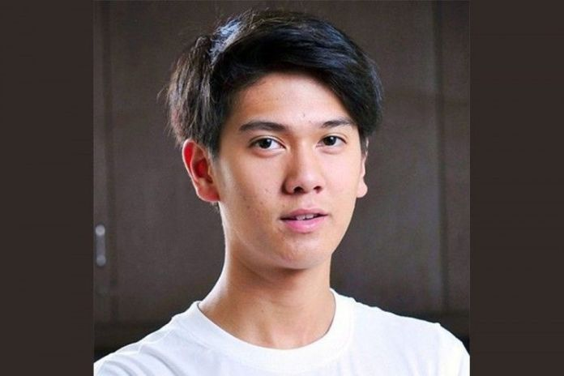
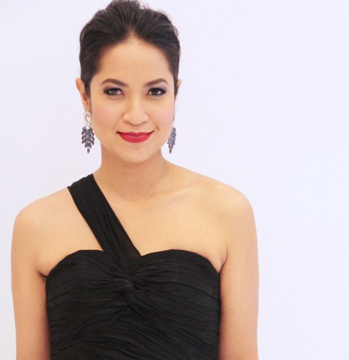
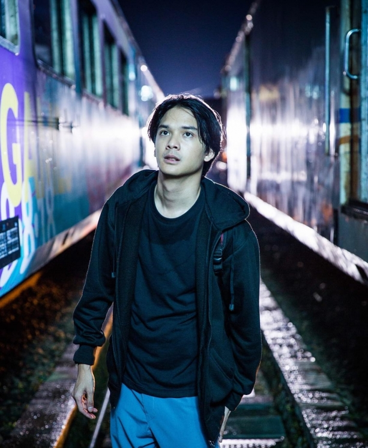
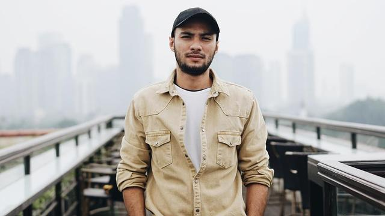
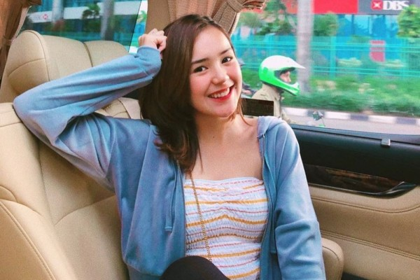
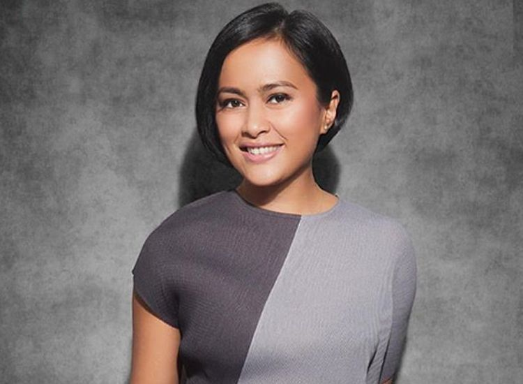

Pemain
-

- Adipati Dolken
- Mawar Eva de Jongh
- Vanesha Prescilla
- Iqbal Ramadhan
- Nila Sari
- Denira Wiraguna
- Jourdy Pranata
- Refal Hadi
- Diandra Agatha
- Rendi Jhon
- Beby Tsabina
- Sarah Seachan
- Sandrinna Michelle
Nama Lengkap : Adipati Koesmadji
Tempat Tanggal Lahir : Jakarta, 19 Agustus 1991
Nama Lengkap: Mawar Eva De Jongh
Tempat, Tanggal Lahir: Harlem, 26 September 2001
Nama Lengkap: Vanesha Prescilla
Tempat, Tanggal Lahir: Jakarta, 20 Oktober 2000
Nama Lengkap: Iqbaal Dhiafakhri Ramadhan
Tempat, Tanggal Lahir: Surabaya, 28 Desember 1999
Nama Lengkap: Nila Sari
Tempat, Tanggal Lahir: Jakarta, 26 Maret 1960
Nama Lengkap: Denira Wiraguna
Tempat, Tanggal Lahir: Tanggerang, 9 Septembet 1999
Nama Lengkap: Jourdy Pranata
Tempat, Tanggal Lahir: Jakarta, 20 Oktober 2000
Nama Lengkap: Refal Hadi
Tempat, Tanggal Lahir: Jakarta, 24 Oktober 1993

Nama Lengkap: Diandra Agatha
Tempat, Tanggal Lahir: Cimahi, 03 Januari2000
Nama Lengkap: Rendi Jhon Pratama
Tempat, Tanggal Lahir: Medan, 1 Desember 1993
Nama Lengkap: Beby Tsabina
Tempat, Tanggal Lahir: Banda Aceh, 27 Oktober 2002
Nama Lengkap: Sarah Meirizka Hardiany Sechan
Tempat, Tanggal Lahir: Bandung, 9 Mei 1974
Nama Lengkap: Sandrinna Michelle
Tempat, Tanggal Lahir: Lampung, 11 Januari 2007